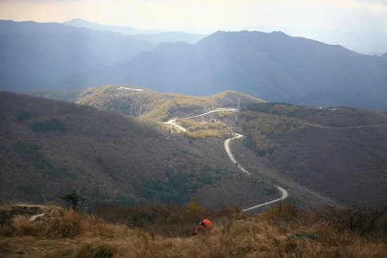
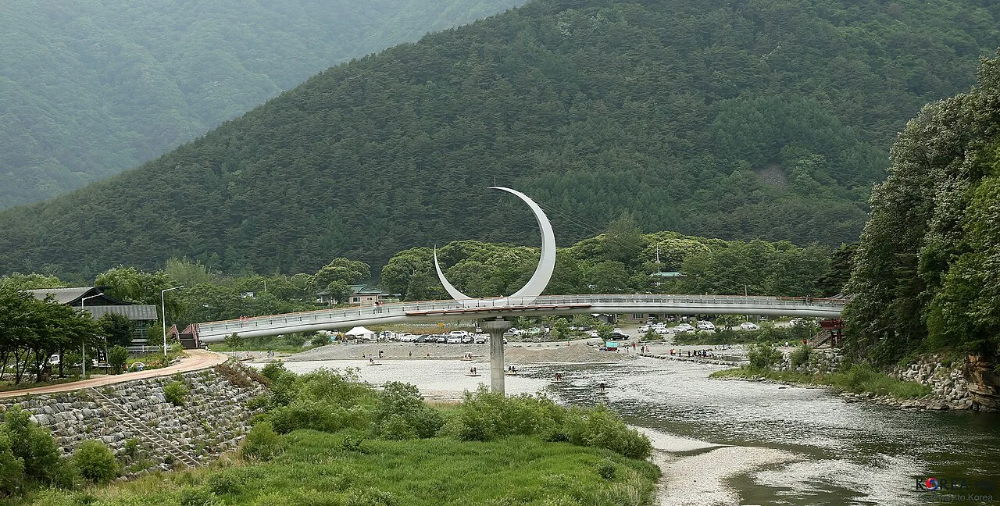
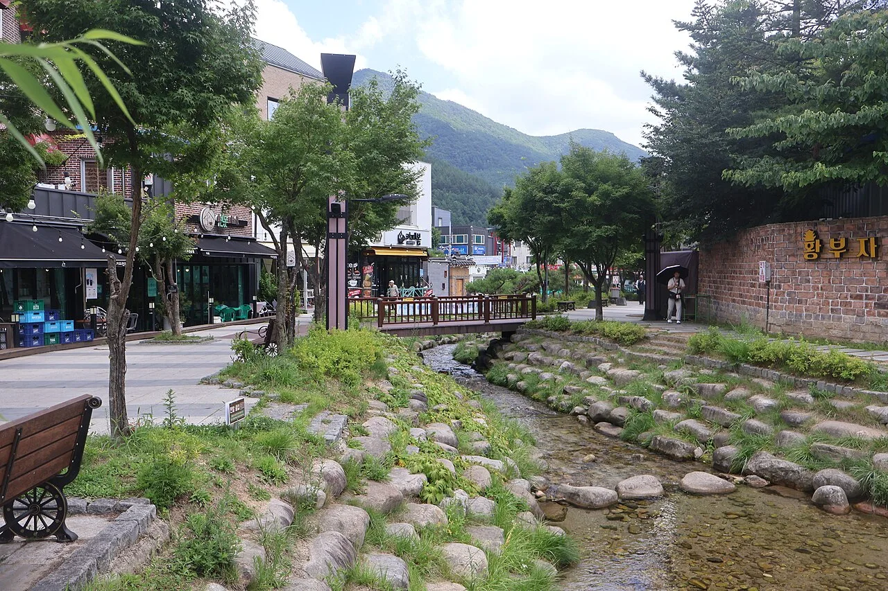
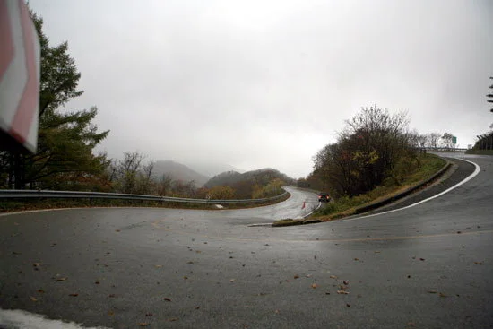
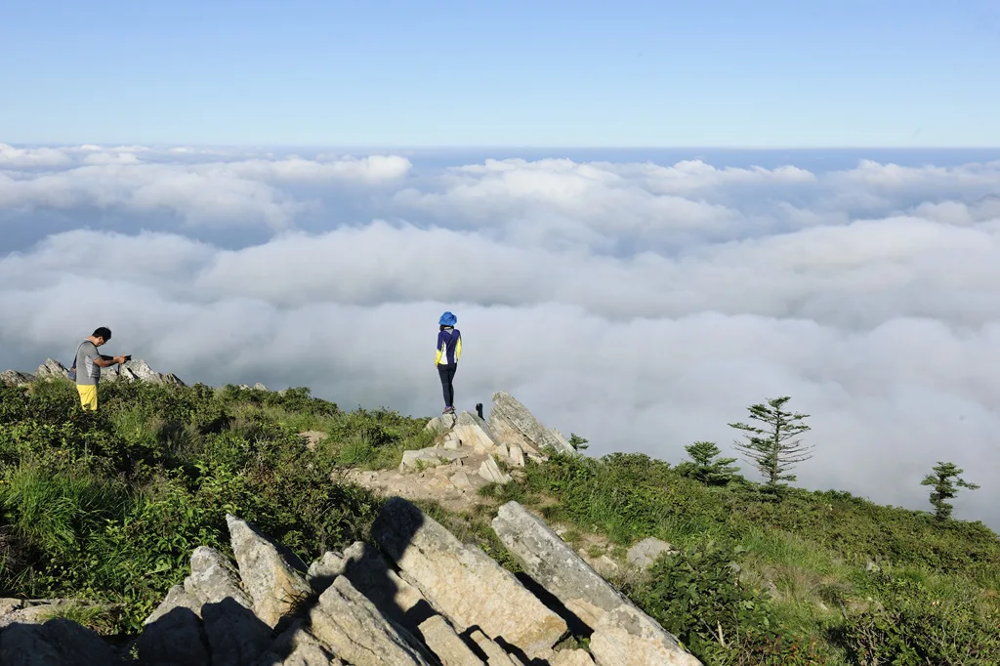
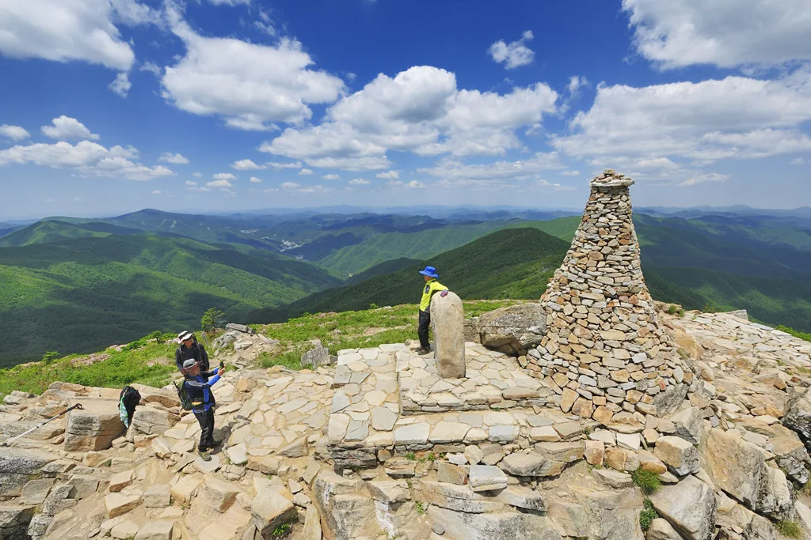

▲ 만항재 표지. 정선군 고한읍에 속하며 해발 1,330m로 표기돼 있다 ⓒ Wikimedia Commons
1. 차로 갈 수 있는 가장 높은 곳
만항재는 해발 1,330m입니다. 자동차로 오를 수 있는 포장도로 가운데 국내에서 가장 높습니다.
행정구역은 정선군 고한읍이고, 정선과 태백을 잇는 고개입니다. 주차료도 입장료도 없고 상시 개방돼 있습니다. 즉 시간만 맞으면 언제든 갈 수 있습니다.
오르는 길에는 S자 커브가 많습니다. 운전 자체가 목적인 사람에게는 매력이고, 멀미가 있는 동승자에게는 부담입니다. 이 점을 미리 공유해 두는 편이 좋습니다.
고갯길 자체에 대한 내용은 고갯길 넷을 숫자로 정리한 기사에 따로 정리해 두었습니다. 이 기사에서는 그 이후를 다룹니다.

▲ 백두대간 만항재 표석. 해발 1,330m가 새겨져 있고, 늦가을부터 잔설이 남는다 ⓒ 한국관광공사
2. 어느 쪽에서 올라갈 것인가
접근로가 여러 갈래라는 점이 이 고개의 특징입니다. 정선 하이원 쪽, 영월 상동 쪽, 태백 시내 쪽 어디에서도 올라갈 수 있습니다.
| 방향 | 특징 |
|---|---|
| 정선 고한 · 하이원 쪽 | 숙박·편의시설이 가까움 |
| 영월 상동 쪽 | 교통량이 적고 한적함 |
| 태백 시내 쪽 | 주유·정비 등 도시 기능 이용 가능 |
여기서 동선의 요령이 나옵니다. 한쪽으로 올라가 반대쪽으로 내려오면 같은 길을 두 번 달리지 않아도 됩니다. 왕복이 아니라 통과로 계획하는 것입니다.

▲ 산허리를 감고 올라가는 고갯길. 지도상 거리는 짧아 보여도 실제로는 이런 곡선 구간이 계속 이어진다 ⓒ 강원도민일보
주유는 산 아래에서 미리 해 두십시오. 고개 위와 그 주변에는 주유소가 없습니다. 산길에서는 연료 소모도 평지보다 큽니다.
3. 2와 7로 끝나는 날
정선아리랑시장은 끝자리가 2와 7인 날에 5일장이 섭니다. 매월 2·7·12·17·22·27일입니다.
| 항목 | 내용 |
|---|---|
| 장날 | 매월 2 · 7 · 12 · 17 · 22 · 27일 |
| 운영 시간 | 09:00 ~ 18:00 (점포별 상이) |
| 주차 | 시장 · 아라리공원 공영주차장 무료 |
| 권장 도착 | 장날 오전 9시 이전 |
이 날짜가 일정의 축이 됩니다. 만항재는 아무 날이나 갈 수 있지만 5일장은 정해진 날에만 섭니다. 그러니 장날을 먼저 고르고 고개를 붙이는 순서가 맞습니다.
주차는 무료지만 장날 오전에는 금방 찹니다. 일부 구간에는 임시 주차 안내 인력이 배치됩니다. 9시 이전 도착이 권장되는 이유입니다.

▲ 정선은 하천을 따라 시가지가 이어진다. 하천변 공간이 사실상 주차장 역할을 한다 ⓒ Wikimedia Commons
4. 하루를 잇는 순서
장날 오전과 고개 오후를 붙이는 것이 기본형입니다.
| 시간대 | 일정 |
|---|---|
| ~09:00 | 정선아리랑시장 도착 · 주차 |
| 09:00~11:30 | 5일장 |
| 12:00~13:30 | 이동 및 점심 |
| 14:00~16:00 | 만항재 · 함백산 일대 |
| 16:00~ | 태백 방향으로 하산 |
순서를 뒤집으면 문제가 생깁니다. 고개를 오전에 넣고 시장을 오후에 붙이면, 장이 파하는 시간과 겹칩니다. 5일장은 오후로 갈수록 물건과 사람이 빠집니다.

▲ 태백 시내의 황지연못. 고개에서 내려온 뒤 도시 쪽 일정을 붙이기 좋다 ⓒ Wikimedia Commons
5. 계절과 시각이 만드는 변수
가을에는 해가 짧아집니다. 해발 1,330m에서 일몰을 보고 내려오면 산길 구간이 어두워집니다. S자 커브가 이어지는 길에서 야간 주행은 부담이 큽니다.

▲ 안개가 내려앉은 고갯길. 시야가 이 정도로 줄면 커브 앞에서 속도를 줄일 시간이 사라진다 ⓒ 강원도민일보
11월 이후에는 결빙이 변수입니다. 고도가 높아 평지보다 먼저 얼기 시작합니다. 관련 내용은 도로 결빙 기사에 정리했습니다.

▲ 함백산 능선에서 내려다본 운해. 고도가 높은 만큼 아래쪽 도로는 안개 속이라는 뜻이기도 하다 ⓒ 정선군
통제 여부도 확인이 필요합니다. 적설이나 결빙이 심하면 고갯길은 통제됩니다. 상시 개방이라는 말은 평상시 기준입니다.
6. 정리
첫째, 날짜를 먼저 정하십시오. 2와 7로 끝나는 날이면 하루에 두 가지를 묶을 수 있습니다.
둘째, 왕복이 아니라 통과로 짜십시오. 한쪽으로 올라 반대쪽으로 내려오면 같은 풍경을 두 번 보지 않습니다.

▲ 함백산 정상. 만항재까지는 차로 올라오지만 여기서부터는 걸어야 한다. 고개 위에 시간을 얼마나 둘지 미리 정해두는 편이 낫다 ⓒ 정선군
셋째, 연료와 화장실은 산 아래에서 해결하십시오. 고개 위에는 편의시설이 거의 없습니다.
넷째, 하산 시각을 일몰 전으로 잡으십시오. 가을 산길에서 어두워진 뒤의 30분은 낮의 한 시간보다 피곤합니다.
정리하면 이렇습니다. 만항재는 목적지가 아니라 동선의 정점입니다. 그 앞뒤에 무엇을 붙이느냐가 이 지역 여행의 만족도를 결정합니다.